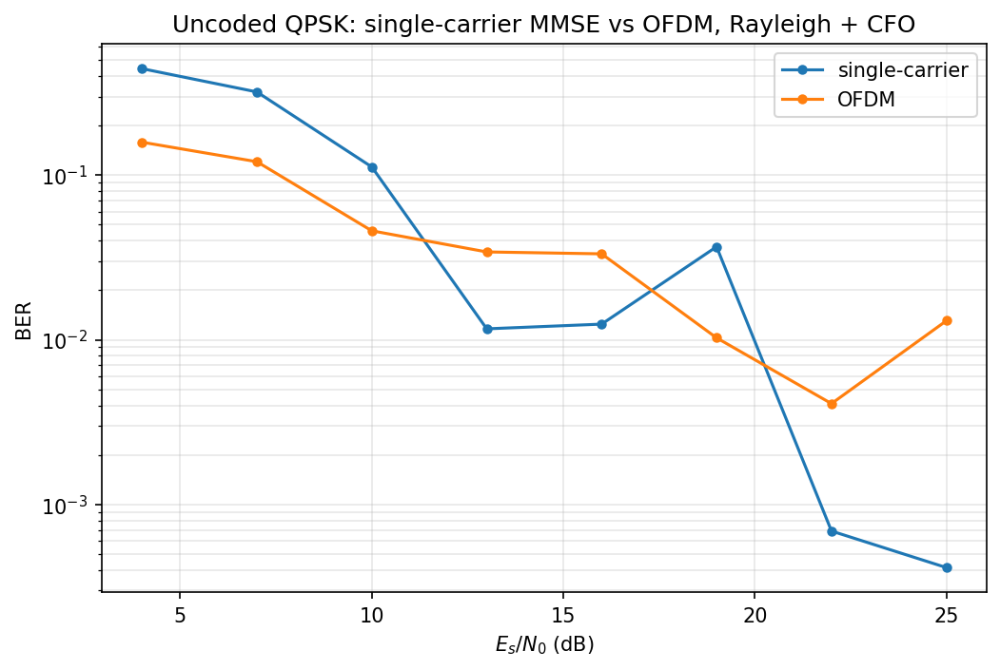
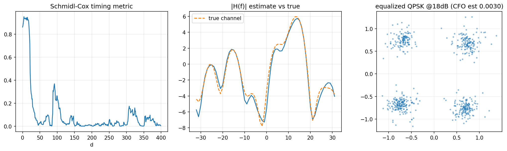

08 OFDM 收发机¶
代码：
src/phylayer/ofdm.py，实验：experiments/exp04_ofdm_link.py上游：模块 06 的同步思想、模块 07 的"信道卷积"框架 一句话：把宽带频率选择性信道切成 64 个窄带平坦子信道，均衡退化为每个 载波除一个复数。
它解决什么问题¶
模块 07 的时域均衡在多径信道上能用，但有两个本质代价：
- 时域均衡器要解 \(L_w\) 阶线性正规方程，构造方程的 Toeplitz 矩阵规模随 \(L_h+L_w\) 增长——复杂度随信道长度增长；
- 信道频谱的深凹点上，MMSE 也只能折中——ISI 消了，该频点信噪比还是差。
OFDM 换了一条更聪明的思路：不做时域均衡，让 ISI 在结构上消失。原理 分两步：
- 拉长符号周期：把几十个 QAM 符号并排放在正交子载波上，一个 OFDM 符号持续 \(N=64\) 个采样——多径那点儿拖尾相对超长符号周期变得可以 忽略；
- 加循环前缀 CP：把符号尾部 \(N_{cp}\) 个采样复制到前面，让信道的 线性卷积在接收窗口内表现得像循环卷积。
循环卷积在 DFT 域里是对角阵（复指数是循环卷积矩阵的特征向量），于是
每个子载波上信道退化成一个复数标量 \(H_k\)——均衡就是逐载波除一下。 这就是 OFDM 取代单载波均衡的核心卖点：把频率选择性信道切成一堆 平坦衰落子信道。
帧结构（对照 802.11a 设计）¶
[ S&C 同步前导 (CP+64) | 训练符号 (CP+64) | 数据 OFDM 符号 × N (各 CP+64) ]
- 同步前导：只偶数载波携带 PN 序列 → 时域 64 点呈"前 32 = 后 32" 两半重复结构 → Schmidl–Cox 定时 + CFO 粗估；
- 训练符号：全部 62 个可用载波放已知 BPSK → 一步 LS 信道估计；
- 数据符号：58 数据载波 + 4 导频载波（
{6,18,42,54}）→ 导频放 已知 PN，用于逐符号残余相位跟踪（CPE）。
载波规划：DC(0) 与 Nyquist(32) 置零——工程惯例（DC 受本振泄漏污染， Nyquist 在抗混叠滤波器边缘）。
原理¶
CP 为什么能把卷积变成除法¶
信道线性卷积写成矩阵是带状 Toeplitz；DFT 矩阵的特征向量是复指数， 而循环 Toeplitz 矩阵恰好被 DFT 对角化：
CP 的作用正是"伪装"循环卷积：把符号尾部 \(N_{cp}\) 个采样复制到头部， 信道输出在主体窗口内的效果和循环卷积完全一致——条件是 CP 长度 ≥ 信道拖尾长度。这是 OFDM 唯一真正"烧钱"的地方：16/80 = 20% 的带宽 开销换"均衡变成除法"。
临界细节——FFT 窗的位置：窗口可以比符号体早，但有上界：偏早量 \(\le N_{cp}-(L-1)\)——窗内完整装下信道拖尾时才是合法循环移位，被吸收进 \(H\) 的线性相位项；偏早更多同样会抓到上一符号的延拓尾部。窗口绝不能 晚（窗尾会抓到下一个符号的 CP 样本，不属于本符号的循环延拓 → ISI 直接 进窗）。这是调通接收机时实际踩到的坑：同步估计偏晚 4 个采样，整帧 误码率 50%。
Schmidl–Cox 定时¶
前导时域两半相同 → 滑动相关：
噪声区 \(M\approx0\)；进入前导后，两半样本只差一个 CFO 公共相位（调制 部分被共轭乘积消去），\(|P(d)|\to R(d)\)、\(M\to1\) 形成 平台。平台宽约 \(N_{cp}-(L_h-1)\)（无多径时即 \(N_{cp}\)）——粗定时够了，精确点还得下一步。
CFO 估计（两半相关）¶
相隔 \(L=N/2\) 的两样本在 CFO \(\epsilon\)（归一化）下差固定相位 \(e^{j2\pi\epsilon L}\)：
和模块 06 的 Moose 是同一个思想：重复结构把频偏转成可测相位差。
CFO 不补会怎样——ICI 定量：以子载波间隔归一化的频偏 \(\epsilon=\Delta f\cdot T_u\)（exp04 注入的 \(\Delta f=3\times10^{-3}\) 周/样点 对应 \(\epsilon=0.192\)），载波 \(l\) 的接收符号变为
（严格式里 \(s_m\) 还带一个公共相位因子 \(e^{j\pi(m+\epsilon)(N-1)/N}\)， 只影响相位、不影响功率分配，这里省去。）
有用信号被压成 \(|s_0|^2\approx 1-(\pi\epsilon)^2/3\)，泄漏出的能量即 载波间干扰 ICI：由 Parseval，\(\sum_m|s_m|^2=1\)，所以
代入 \(\epsilon=0.192\)：ICI ≈ −9.4 dB（11%）——ICI 不可压， 相当于把每个载波的有效 SNR 钉死在 ~9.4 dB 上限：QPSK 也压出 ~3×10⁻³ 的误符号地板，16QAM ~26%、64QAM ~70% 基本报废。 而 Moose 估计+补偿后的残余频偏 ~3.5×10⁻⁵ 周/样点（ε≈2×10⁻³） 对应 ICI ≈ −48 dB，完全淹没在噪声里——这就是 OFDM 必须 先补 CFO 的定量理由：不补是系统性灾难，补完代价可忽略。 另外频偏的整数部分 \(\epsilon\ge1\) 不是 ICI 而是载波整体错位（导频/数据全挪一格），802.11a 靠长短前导 两级估计分别覆盖。
信道估计与时域降噪¶
训练符号全载波已知 → 逐载波 LS：
再做一步工程上必做的时域降噪：\(\hat H\to\)IFFT 得信道冲激响应估计 \(\hat h\)，把 CP 长度以外的抽头清零（真实信道拖尾不可能超 CP），再 FFT 回来。白噪声原本均摊在全部 64 个抽头，截断后只剩约 \(N_{cp}/N\) 的噪声 能量——估计方差约降 6 dB。这就是"利用信道结构先验"。
逐符号残余相位跟踪（CPE）¶
CFO 估计有残差，随时间累积成相位斜坡；定时偏差/抖动在频域引入随载波 线性变化的相位斜坡，其公共分量也表现为残余相位误差。 每个数据符号用 4 个导频做相干合并估公共相位误差：
为什么不能写 mean(Y_p/(D_p·H_p))：深衰落导频上 \(|H|\approx0\)，
噪声被 \(1/|H|\) 放大，一个坏导频毁掉整个 CPE。乘 \(\hat H^*\) 后每项
贡献权重正比 \(|H|^2\)——弱导频自动降权（信道状态信息加权的微缩版）。
这是调试中真实抓到的问题：某导频恰好坐在信道零点，朴素平均给出
2.8 rad 的 CPE 误差，比不校正还糟。
代码走读（按调用顺序）¶
frame = ofdm_tx(bits) # sync_preamble + training + ofdm_modulate(加CP)
# ... 过信道 + 噪声 ...
syms = ofdm_rx(rx_wave) # 前导匹配滤波+首径回扫 -> CFO -> derotate
# -> FFT窗(偏早2) -> LS估计+时域降噪
# (S&C 度量只算给演示图，定时全靠匹配滤波)
# -> 逐符号 CPE 校正 -> 除以 H_hat
实验结果¶
exp04_ofdm_link.py：瑞利 9 抽头多径 + CFO \(3\times10^{-3}\)，无编码 QPSK。
- 干净信道回环：误符号率 0；多径+CFO 无噪声：0。
- BER 曲线见
assets/ofdm_ber.png：低 SNR 下 OFDM 反而优于单载波 （有限长 MMSE 均衡器在低 SNR 退化为匹配滤波，残留 ISI 不除； OFDM 把 ISI 化成每个载波上的平坦衰落，逐个补偿）；高 SNR 下残留 ~1% 误码来自深衰落载波上的迫零噪声放大——这正是"OFDM 必须配信道编码+载波间交织"的理由（模块 04 的卷积码+交织恰好是解药， WiFi 的 BCC 编码就是这么做的）。


面试可能怎么问¶
Q：为什么 OFDM 需要 CP？CP 多长合适？ A：CP 把线性卷积变成循环卷积，让 DFT 对角化信道矩阵；长度要 ≥ 信道 最大时延扩展。代价是带宽效率损失 \(N_{cp}/(N+N_{cp})\)。CP 不够长会引入 残余 ISI+ICI——本项目实测：CP=16 时信道拖尾 \(L\le N_{cp}+1=17\) 理论上 无 ISI，留余量取 9 抽头实验安全；拖尾一旦超过 CP，ISI/ICI 进窗任何 同步位置都救不回来。
Q：S&C 定时的平台问题怎么解决？ A：平台宽约 \(N_{cp}\)、峰不锐利，多径下中点漂移。工程上要么加权化/差 分化，要么像本项目：S&C 只给粗范围，再匹配滤波已知前导 + 首径检测 精确定位（802.11 用长前导互相关）。
Q：FFT 窗偏了会怎样？ A：偏早合法但有上界（偏早量 \(\le N_{cp}-(L-1)\)：窗内完整装下信道拖尾， 循环移位才被 \(H\) 吸收成线性相位项）； 偏晚=灾难（抓到下一符号的 CP，ISI 直接进窗）。所以接收机显式偏 2 个 采样——宁早勿晚。
Q：OFDM 的弱点？ A：PAPR 高（多载波叠加峰均比大，功放回退损失）、对 CFO/相位噪声敏感 （子载波正交性靠频率精度）、深衰落载波上 ZF 噪声放大（要编码交织 补偿）、CP 是纯开销。
Q：导频干什么用？
A：估残余公共相位误差（CFO 残差+定时抖动+相位噪声）。本项目踩过的坑：
朴素 mean 会被深衰落导频带飞，要相干合并按 \(|H|^2\) 加权——信道
状态信息加权思想的微缩版。
Q：OFDM 和单载波均衡怎么选？ A：信道时延扩展长、想省均衡复杂度 → OFDM（每载波一个除法）；信道接近 平坦、怕 PAPR/频偏 → 单载波+时域均衡。5G 下行用 OFDM，上行考虑 PAPR 用了 DFT-s-OFDM（SC-FDMA）。